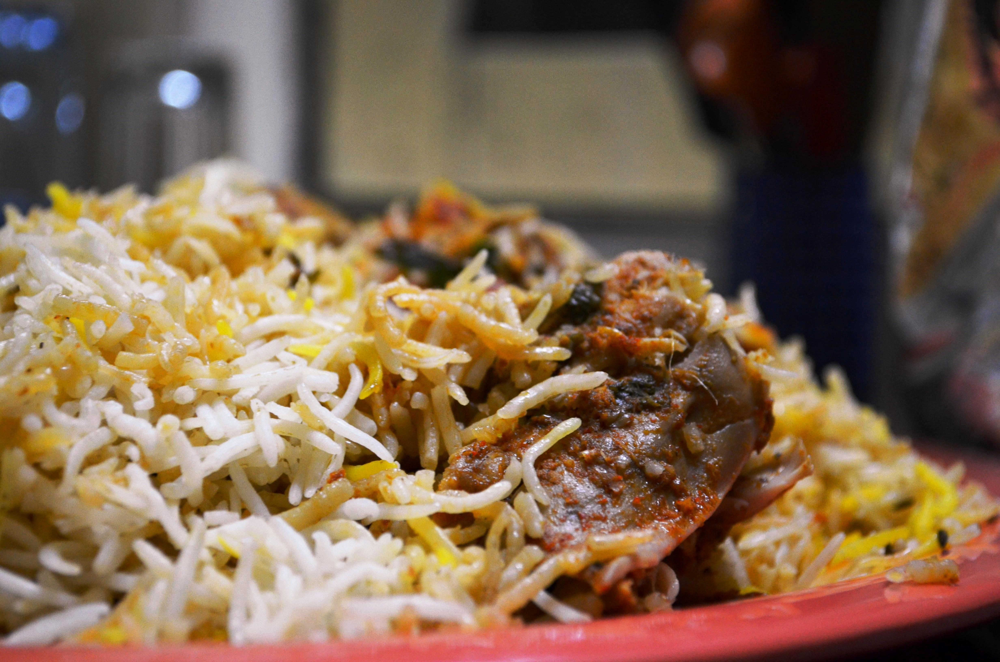

Home
Biryani

Chicken Biryani
Biryani is an iconic, mixed rice dish layered with marinated meat (such as chicken, mutton, or beef) or vegetables, and slow-cooked in a sealed pot
with a rich medley of whole and ground spices, saffron, and fresh herbs like mint and cilantro. Its cultural significance traces back to the royal kitchens of the Mughal Empire, where it is believed to have developed from Persian pilaf by fusing it with native Indian spices and cooking techniques.
Biryani is universally recognized as a celebration dish, typically served at weddings and festivals like Eid
Ingredients
Core Components
- Basmati Rice
- Chicken
- Onions
- Yogurt
- Ghee/Oil
Spices & Herbs
- Green cardamom
- Bay Leaves
- Star anise
- Garam masala
- Cumin powder
- Red chilli powder
- Tumeric Powder
- Salt
- Ginger & Garlic paste
- Green Chilli
- Mint
- Coriander
Finishing Touches
- Saffron
- Rose Water
- Lemon Juice
Steps
Part 1: Marinate the Chicken
- Combine Marinade - mix the yogurt, ginger-garlic paste, tumeric powder, red chilli powder, garam masala, chopped mint/corriander as well as lemon juice and salt to taste
- Marinate - add chicken to bowl, ensure they are coated thoroughly. Cover and refrigerate for 30 minutes.
Part 2: Prepare the Rice
- Boil Rice - bring water to boil and add the whole spices (bay leaf, cardamom, cinnamon, cloves). Cook for about 4-5 minutes in order to cook rice to about 70%.
- Drain - drain water and remove spices
- Fry Onions - heat oil, add onions and fry on medium heat and stir frequently until deep golden brown and crispy. Remove onions and set on a paper towel whilst leaving oil in the pan.
Part 3: Layer and Cook
- Cook Chicken - add chicken to the oil and cook for 5 minutes.
- Layer - sprinkle onions and rice over the chicken
- Aromatics - drizzle saffron milk and rose water over the rice.
- Cooking - cover pot with a lid and cook on very low heat for 20-25 minutes.
- Serve - turn off the heat and allow the biryani to rest for 10 minutes. Gently mix before serving for all.
Home